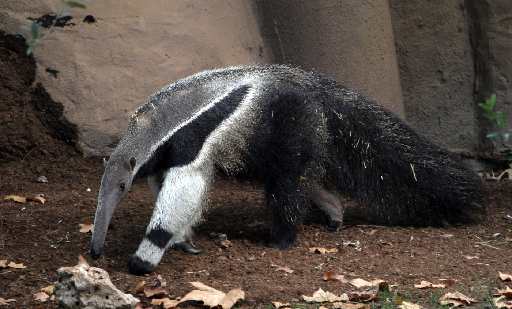

oso hormigero
Els vermilingües constitueixen un subordre de mamífers, coneguts per la seva dieta a base de formigues i tèrmits. Conjuntament amb els peresosos, comprenen l'ordre dels pilosos.
| osos | oso perezoso | oso hormigero |
|---|---|---|
| oso marrón | oso vago | oso trabajador |
| altura 1,50 cm | altura 60 cm | altura 50 cm |
| velocidad 50 Km/h | Velocidad 1,6 km/h | velocidad 48 km/h |